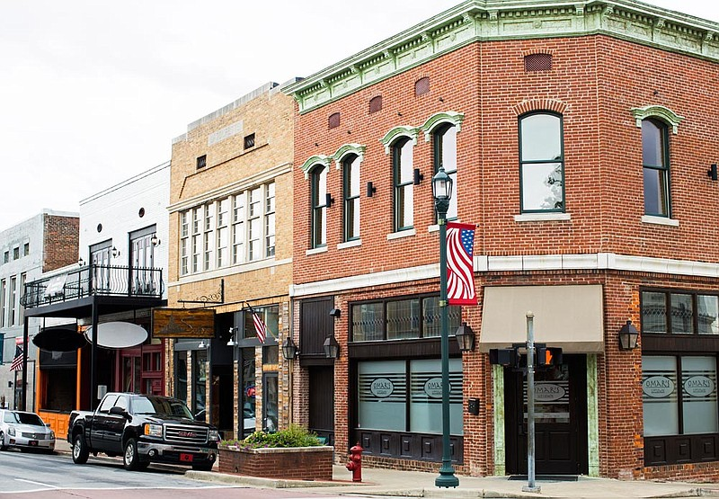

Janesboro
If you like a more rural community, Jonesboro is the perfect place to live or visit. It is one of the largest communities in northeast Arkansas and serves as a hub for this particular area of the state. While not a popular tourist attraction, this community still has hidden charms and places worth visiting.
Interesting Facts about Jonesboro
- Jonesboro's early days were known for significant natural disasters, such as earthquakes.
- During the Civil War, Jonesboro stood as a historical location where the war's impact was deeply felt, a testament to the town's significant past.
- In the nearby area, there was a small community called Nettleton, which in 1958 became a part of Jonesboro. Jonesboro History
popular leisure activities
- Crowley's Ridge Nature Center.
- The ASU Museum.
- The Fowler Center Popular things to do in Jonesboro
| City Population | Year Incorporated | Region | Classification | Average Income compared to state |
|---|---|---|---|---|
| 79,876 | 1883 | Northeast | suburban | $51,124(lower than state average $56,335) |
| Census.gov | ||||
